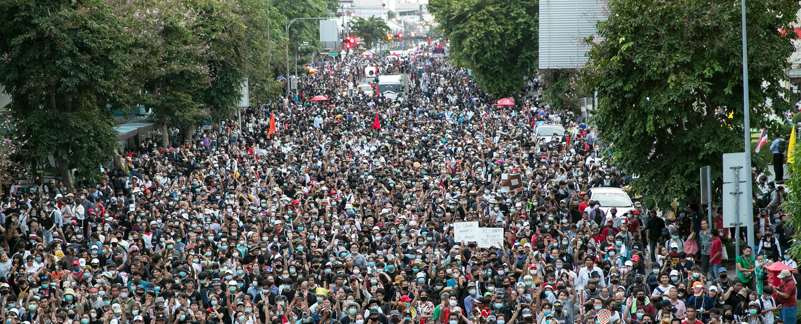
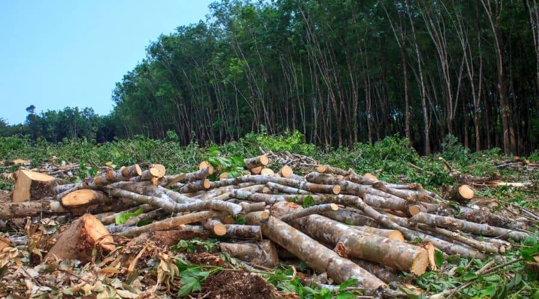

Food insecurity around the world
As of September 30 2024:
- The number of people projected to be in food insecurity and malnutrition catastrophe
(Integrated Food Security Phase Classification (IPC) Phase 5) has surged, increasing from
705,000 in 2023 to 1.9 million in 2024.
- Global undernourishment remains alarmingly persistent, with an estimated 713 million to 757
million people affected in 2023.
From 2023 peak to mid 2024, there has been an increase of at least 1 million people facing high levels of acute food insecurity in countries like Yemen, Ethiopia, Myanmar, Sudan, Nigeria, Malawi, Zimbabwe, and Chad.
Source: https://www.fsinplatform.org/sites/default/files/resources/files/GRFC2024-MYU-en.pdf
# of people in Yemen with high levels of acute food insecurity(IPC/CH phase 3 or above or
equivalent) in 2022
( Millions )
In 2022, IPC/CH phase3+ took up 55% of the whole population of Yemen.
# of people in Afghanistan with high levels of acute food insecurity(IPC/CH phase 3 or above or
equivalent) in 2022
( Millions )
In 2022, IPC/CH phase3+ took up 46% of the whole population of Afghanistan.
Source: https://www.fsinplatform.org/sites/default/files/resources/files/GRFC2023-In-Brief-EN.pdf
Impacts of food insecurity
Health Issues:

Food insecurity can lead to malnutrition, which can cause slower growth in children, weakened immune systems, and increased susceptibility to diseases. Chronic hunger can also contribute to conditions such as anemia, heart disease, and diabetes.
Social Inequality:

Food insecurity often disproportionately affects marginalized communities, worsening existing inequalities in society and leading to social unrest or migration as people seek more stable sources of food and livelihoods elsewhere.
Climate Change Effects:

As climate change intensifies, extreme weather events like droughts, floods, and heatwaves become more frequent, exacerbating food shortages. At the same time, food-insecure regions often rely on unsustainable agricultural practices (like slash-and-burn) that contribute to greenhouse gas emissions, further worsening climate change and the environment we live in.
Biodiversity Loss:
